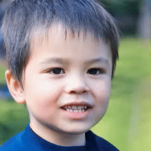
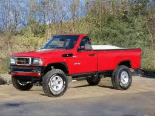
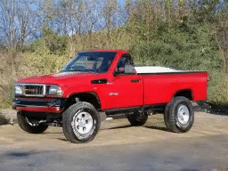
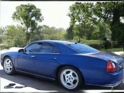
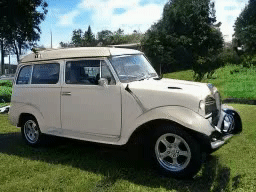
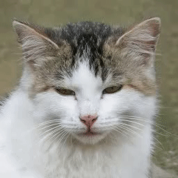

Results
The following results are created by manipulating the versatile semantics
found by ReSeFa.
Diverse semantics discovered from one sample.
FFHQ (StyleGAN2)
| Eyes | Eyebrows | Mouth | Nose |
|  |
Car Wheels (StyleGAN2)
|  |  |
Generalizing semantics across samples.
Car Wheels (StyleGAN2)
|  |  |  |
Church (StyleGAN2)
AFHQ Eyes (StyleGAN3)
|  |
Demo Video


Comment: Explores the influences of the channels on the synthesized images.